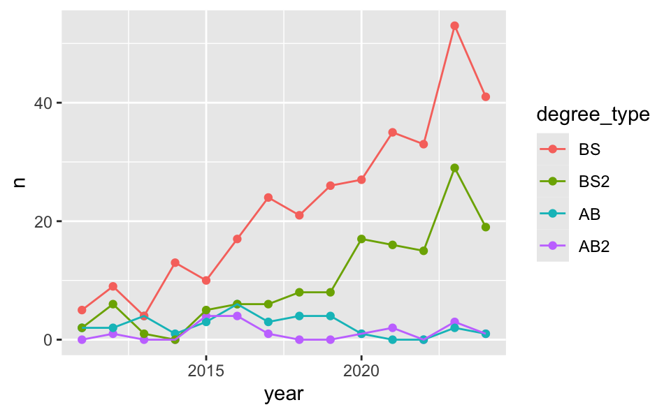
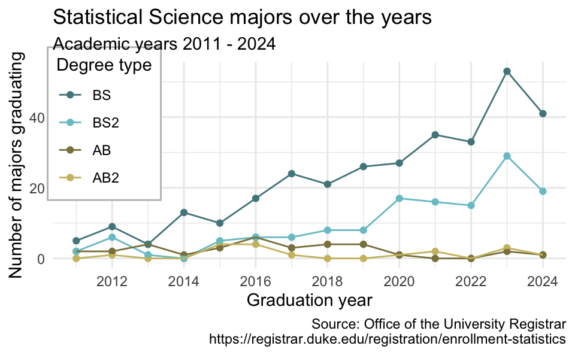
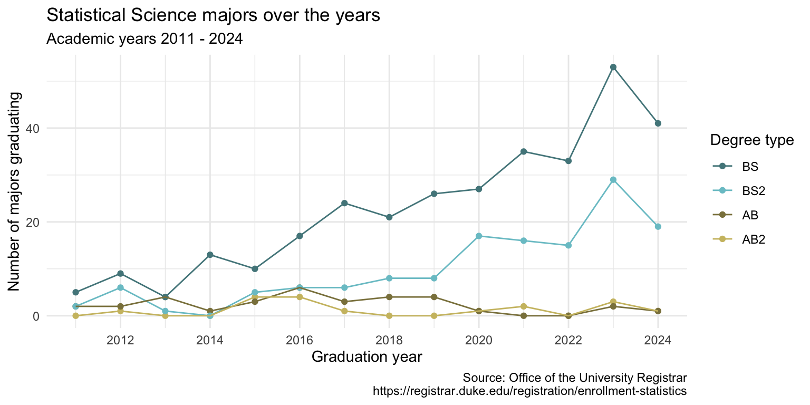
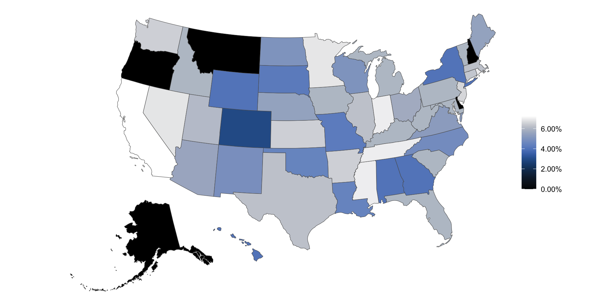

Joining data
Lecture 7
Warm-up
While you wait…
Prepare for today’s application exercise: ae-07-taxes-join
Go to your
aeproject in RStudio.Make sure all of your changes up to this point are committed and pushed, i.e., there’s nothing left in your Git pane.
Click Pull to get today’s application exercise file: ae-07-taxes-join.qmd.
Wait till the you’re prompted to work on the application exercise during class before editing the file.
Announcements
Notes from Lab 1 submissions
Use of AI tools:
- If using an AI tool for code, CITE!
The bare minimum citation must include the AI tool you’re using (e.g., ChatGPT) and your prompt. The prompt you use cannot be copied and pasted directly from the assignment; you must create a prompt yourself.
If we suspect code was generated with by / with the help of an AI tool but not cited, it’s an automatic 0 on that question + potentially further penalties as outlined in https://sta199-f24.github.io/course-syllabus.html#academic-honesty.
. . .
- If using an AI tool for narrative, STOP!
Notes from Lab 1 submissions
Plot labeling: Keep it concise and non-redundant (same info doesn’t need to be repeated, in detail, in axis labels and title).
-
Code style and readability:
- Looking good overall!
- A tool that can help (but won’t get everything right):
Highlight code you want to style
Click on Addins (top of editor), scroll down to STYLER, select Style selection
Narrative: Avoid lengthy or conflicting prose
Recap: StatSci majors
ggplot(
statsci_longer,
aes(
x = year, y = n, color = degree_type
)
) +
geom_point() +
geom_line()
Recap: Scales
Update x-axis scale: 2012 to 2024, increments of 2 years.
Recap: Colors
Use custom colors.
Recap: Labels and themes
Add custom labels and change theme.
ggplot(
statsci_longer,
aes(
x = year, y = n, color = degree_type
)
) +
geom_point() +
geom_line() +
scale_x_continuous(breaks = seq(2012, 2024, 2)) +
scale_color_manual(
values = c(
"BS" = "cadetblue4",
"BS2" = "cadetblue3",
"AB" = "lightgoldenrod4",
"AB2" = "lightgoldenrod3"
)
) +
labs(
x = "Graduation year",
y = "Number of majors graduating",
color = "Degree type",
title = "Statistical Science majors over the years",
subtitle = "Academic years 2011 - 2024",
caption = "Source: Office of the University Registrar\nhttps://registrar.duke.edu/registration/enrollment-statistics"
) +
theme_minimal()
Recap: Legends
ggplot(
statsci_longer,
aes(
x = year, y = n, color = degree_type
)
) +
geom_point() +
geom_line() +
scale_x_continuous(breaks = seq(2012, 2024, 2)) +
scale_color_manual(
values = c(
"BS" = "cadetblue4",
"BS2" = "cadetblue3",
"AB" = "lightgoldenrod4",
"AB2" = "lightgoldenrod3"
)
) +
labs(
x = "Graduation year",
y = "Number of majors graduating",
color = "Degree type",
title = "Statistical Science majors over the years",
subtitle = "Academic years 2011 - 2024",
caption = "Source: Office of the University Registrar\nhttps://registrar.duke.edu/registration/enrollment-statistics"
) +
theme_minimal() +
theme(
legend.position = "inside",
legend.position.inside = c(0.1, 0.7),
legend.background = element_rect(fill = "white", color = "gray")
)Recap: Plot sizing

Recap: Data tidying
Data sets can’t be labeled as wide or long but they can be made wider or longer for a certain analysis that requires a certain format
When pivoting longer, variable names that turn into values are characters by default. If you need them to be in another format, you need to explicitly make that transformation, which you can do so within the
pivot_longer()function.You can tweak a plot forever, but at some point the tweaks are likely not very productive. However, you should always be critical of defaults (however pretty they might be) and see if you can improve the plot to better portray your data / results / what you want to communicate.
Recoding data
What’s going on in this plot?
Can you guess the variable plotted here?

Sales taxes in US states
sales_taxes# A tibble: 51 × 5
state state_tax_rate avg_local_tax_rate combined_rate
<chr> <dbl> <dbl> <dbl>
1 Alabama 0.04 0.0529 0.0929
2 Alaska 0 0.0182 0.0182
3 Arizona 0.056 0.0278 0.0838
4 Arkansas 0.065 0.0295 0.0945
5 California 0.0725 0.016 0.0885
6 Colorado 0.029 0.0491 0.0781
7 Connecticut 0.0635 0 0.0635
8 Delaware 0 0 0
9 Florida 0.06 0.01 0.07
10 Georgia 0.04 0.0338 0.0738
# ℹ 41 more rows
# ℹ 1 more variable: max_local_tax_rate <dbl>Sales tax in swing states
Suppose you’re tasked with the following:
Compare the average state sales tax rates of swing states (Arizona, Georgia, Michigan, Nevada, North Carolina, Pennsylvania, and Wisconsin) vs. non-swing states.
How would you approach this task?
. . .
- Create a new variable called
swing_statewith levels"Swing"and"Non-swing" - Group by
swing_state - Summarize to find the mean sales tax in each type of state
mutate() with if_else()
Create a new variable called swing_state with levels "Swing" and "Non-swing".
Recap: if_else()
if_else(
x == y,
"x is equal to y",
"x is not equal to y"
)- 1
- Condition
- 2
-
Value if condition is
TRUE - 3
-
Value if condition is
FALSE
Sales tax in swing states
Compare the average state sales tax rates of swing states vs. non-swing states.
Sales tax in coastal states
Suppose you’re tasked with the following:
Compare the average state sales tax rates of states on the Pacific Coast, states on the Atlantic Coast, and the rest of the states.
How would you approach this task?
. . .
- Create a new variable called
coastwith levels"Pacific","Atlantic", and"Neither" - Group by
coast - Summarize to find the mean sales tax in each type of state
mutate() with case_when()
Create a new variable called coast with levels "Pacific", "Atlantic", and "Neither".
Recap: case_when()
case_when(
x > y ~ "x is greater than y",
x < y ~ "x is less than y",
.default = "x is equal to y"
)- 1
-
Value if first condition is
TRUE - 2
-
Value if second condition is
TRUE - 3
-
Value if neither condition is
TRUE, i.e., default value
Sales tax in coastal states
Compare the average state sales tax rates of states on the Pacific Coast, states on the Atlantic Coast, and the rest of the states.
Sales tax in US regions
Suppose you’re tasked with the following:
Compare the average state sales tax rates of states in various regions (Midwest - 12 states, Northeast - 9 states, South - 16 states, West - 13 states).
How would you approach this task?
. . .
- Create a new variable called
regionwith levels"Midwest","Northeast","South", and"West". - Group by
region - Summarize to find the mean sales tax in each type of state
mutate() with case_when()
Who feels like filling in the blanks lists of states in each region? Who feels like it’s simply too tedious to write out names of all states?
Joining data
Why join?
Suppose we want to answer questions like:
Is there a relationship between
- number of QS courses taken
- having scored a 4 or 5 on the AP stats exam
- motivation for taking course
- …
and performance in this course?”
. . .
Each of these would require joining class performance data with an outside data source so we can have all relevant information (columns) in a single data frame.
Why join?
Suppose we want to answer questions like:
Compare the average state sales tax rates of states in various regions (Midwest - 12 states, Northeast - 9 states, South - 16 states, West - 13 states).
. . .
This can also be solved with joining region information with the state-level sales tax data.
Setup
For the next few slides…
left_join()

left_join(x, y)Joining with `by = join_by(id)`# A tibble: 3 × 3
id value_x value_y
<dbl> <chr> <chr>
1 1 x1 y1
2 2 x2 y2
3 3 x3 <NA> right_join()

right_join(x, y)Joining with `by = join_by(id)`# A tibble: 3 × 3
id value_x value_y
<dbl> <chr> <chr>
1 1 x1 y1
2 2 x2 y2
3 4 <NA> y4 full_join()

full_join(x, y)Joining with `by = join_by(id)`# A tibble: 4 × 3
id value_x value_y
<dbl> <chr> <chr>
1 1 x1 y1
2 2 x2 y2
3 3 x3 <NA>
4 4 <NA> y4 inner_join()

inner_join(x, y)Joining with `by = join_by(id)`# A tibble: 2 × 3
id value_x value_y
<dbl> <chr> <chr>
1 1 x1 y1
2 2 x2 y2 semi_join()

semi_join(x, y)Joining with `by = join_by(id)`# A tibble: 2 × 2
id value_x
<dbl> <chr>
1 1 x1
2 2 x2 anti_join()

anti_join(x, y)Joining with `by = join_by(id)`# A tibble: 1 × 2
id value_x
<dbl> <chr>
1 3 x3 Application exercise
Goal
Compare the average state sales tax rates of states in various regions (Midwest, Northeast, South, West), where the input data are:
- States and sales taxes
- States and regions
ae-07-taxes-join
Go to your ae project in RStudio.
If you haven’t yet done so, make sure all of your changes up to this point are committed and pushed, i.e., there’s nothing left in your Git pane.
If you haven’t yet done so, click Pull to get today’s application exercise file: ae-07-taxes-join.qmd.
Work through the application exercise in class, and render, commit, and push your edits by the end of class.